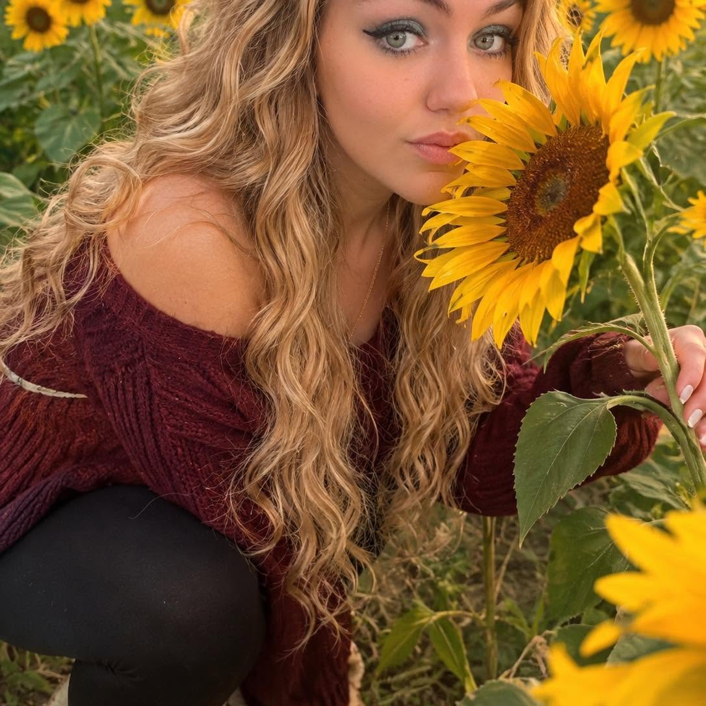

I always wanted to do an autobiography so here it goes: I was born in 1990 - yes the late 1900's - in Florida.
For 13 years we lived here until I decided I wanted a change of scenery so we moved to the Lone Star State!
When I was 16, my grandma that raised me passed away from cancer and so I moved to my moms
here in VA. That was 20 years ago and I still said it!!! Flash forward to 18 and I joined the military
....the Army to be exact - Hooah! But that career path was not in the cards for me and I was medically
chaptered out 10 months later.
Now lets flash forward a couple more years. Im 21 and find out I am having twins!!!! HOLY COW!!!! That was
only my dream since I was a young girl and here I am on the first try having twins. Sadly, being with their
dad also was not in my Bingo Card - cuz he split. Anyways I went to school for dental assisting back in 2017 when
my kids started school and have worked my way up to office management. Im just not happy no matter how good I am at it
With that being said, I took a class in college about web design and I fell in love!! So with that being said here we
are!! I am currently enrolled in school through Coursera to become a Full Stack Developer. Im def stuck on learning the
front end fully before I move onto the back-end aspects of the job. Here in lies my first project!! Im very proud of this
project - if you have time take a look!!
